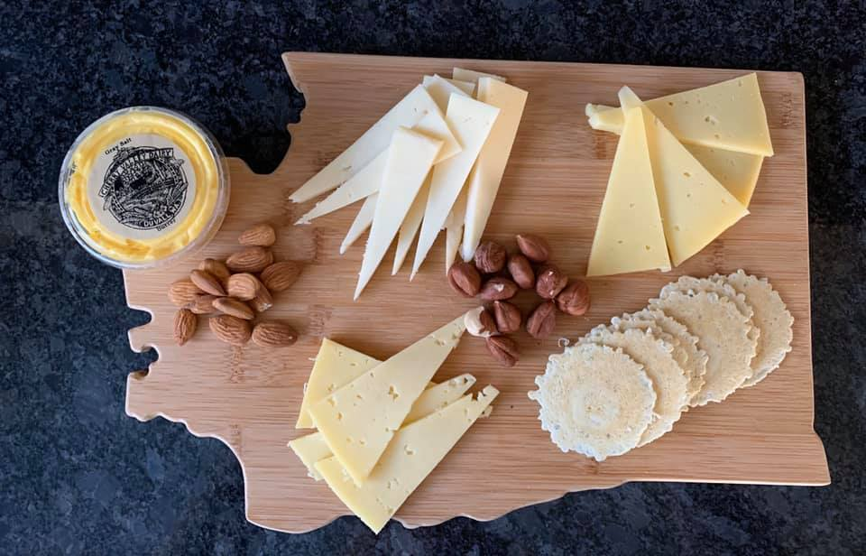

We are a growing group of cheese hobbyists located in Washington state. The cheese making hobby has been gaining momentum in the past couple of years and this club plans to build on that momentum to advance the hobby...and of course to have fun along the whey!